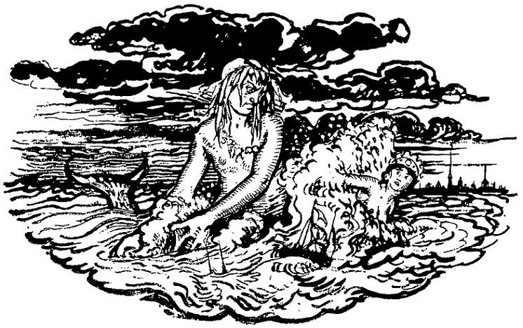

Красуйся, Градъ Петровъ, и стой
Неколебимо, какъ Россія,
Да умирится же съ тобой
И побѣжденная стихія;
Вражду и плѣнъ старинный свой
Пусть волны финскія забудутъ
И тщетной злобою не будутъ
Тревожить вѣчный сонъ Петра!
Была ужасная пора...
Объ ней начну повѣствованье.
И будЬ оно, друзЬя, для васъ
Вечерній, страшный лишЬ разсказъ,
А не зловѣщее преданЬе...
